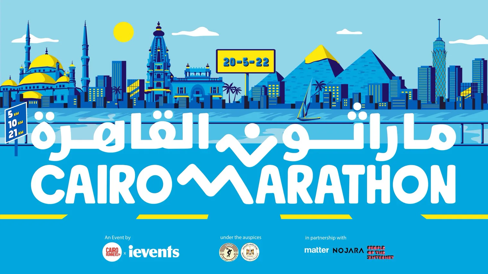

A running event for a city that reads in two languages at once, so the identity had to work in both without either feeling like a translation.
Thousands of runners, and a skyline everybody already knows by heart. I wanted the mark to move, and the whole city to feel like the route.
The zig-zag reads as legs mid-stride, and it holds the Arabic and Latin lockups together. Here it is as printed: